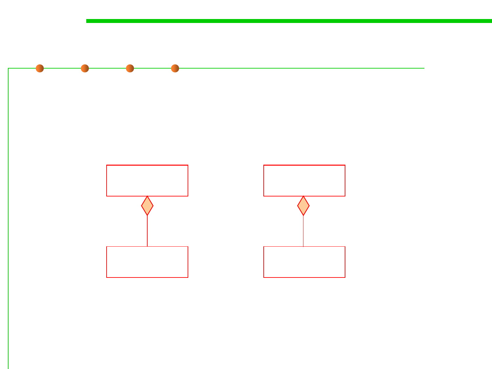

5.1 Metrics, Morphology and External Observations of Reusability
Approaches of reusing a class: composition
▪ Another closer form of reuse is composition
▪ Composition (or owns_a in which one class has another as a
property/instance variable)
Person
Window
1 -heart
Heart
0..* +menus
Menu
A heart is part of a person;
A menu is part of a window;